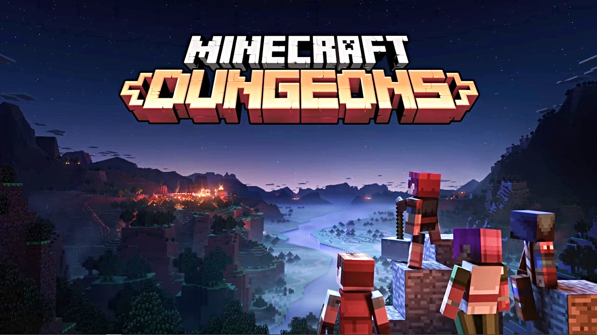
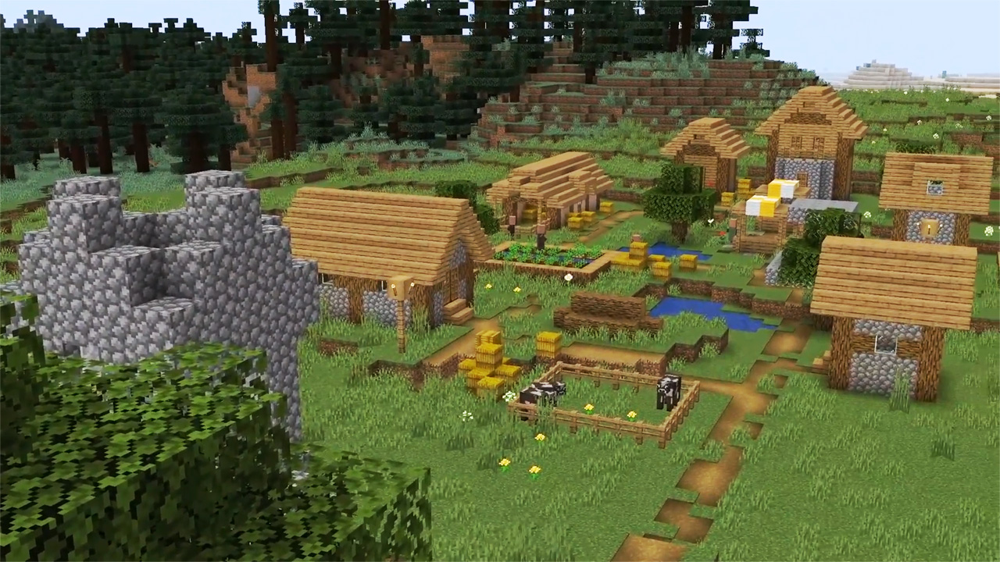
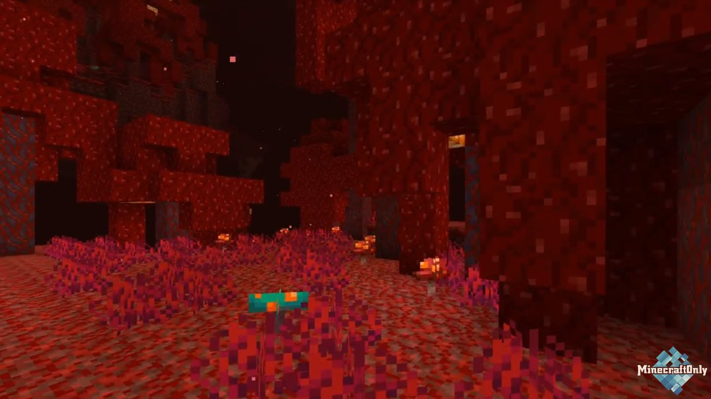
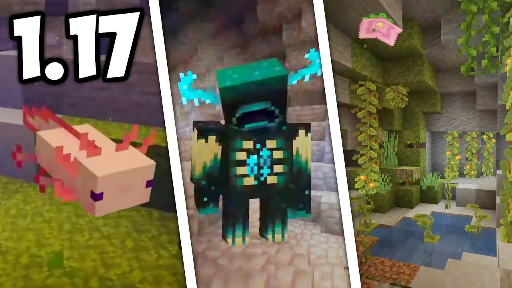
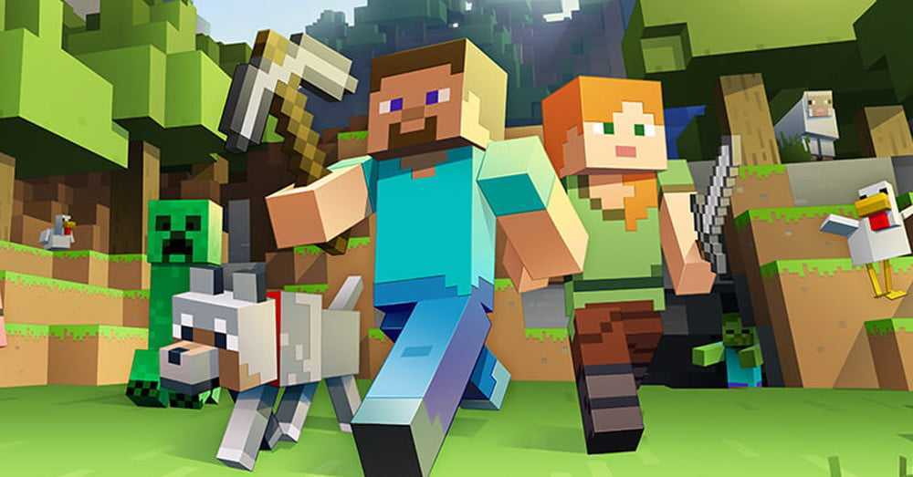

Minecraft (от англ. mine «шахта; добывать» + craft «ремесло») — компьютерная инди-игра в жанре песочницы, разработанная шведским программистом Маркусом Перссоном и выпущенная его компанией Mojang AB. Перссон опубликовал начальную версию игры в 2009 году; в конце 2011 года была выпущена стабильная версия для ПК Microsoft Windows, распространявшаяся через официальный сайт. В последующие годы Minecraft была портирована на Linux и macOS для персональных компьютеров; на Android, iOS и Windows Phone для мобильных устройств; на игровые приставки PlayStation 4, Vita, VR, Xbox One, Nintendo 3DS, Switch и Wii U. В 2014 году Microsoft приобрела Mojang AB и права на Minecraft за $2,5 миллиарда. 4J Studios (англ.)русск. портировала игру на игровые приставки, а Xbox Game Studios разработала мультиплатформенную версию Minecraft и специальное издание игры для образовательных учреждений.
| Биомы | в | Майнкрафте | ||
|---|---|---|---|---|
| Пустыня | Тайга | Равнины | Теплый океан | |
| Дубовый лес | Темный лес | Холодный океан | Саванна | |
| Джунгли | Зима | Горы | Болото |
Minecraft получила всеобщее признание среди игровой прессы и множество наград. Критики выделили такие основные достоинства, как реиграбельность, минималистичный дизайн, динамичный саундтрек и необыкновенную свободу творчества, ограниченную лишь фантазией игрока; недостатками они посчитали наличие недоработанных предметов и сложности с созданием сетевой игры, а также отсутствие в игре режима обучения. Разработчики устранили эти недостатки в последующие годы[⇨]. На лето 2020 года было продано более 200 миллионов копий на всех платформах, что делает Minecraft самой продаваемой игрой в истории (англ.)русск., и 132 миллиона игроков запускали игру хотя бы раз в месяц[⇨]. В популяризации и коммерческом успехе Minecraft большую роль сыграли пользовательский контент, в том числе видеоролики, распространяемые через YouTube, и множество сторонних модификаций[⇨]. В разные годы был выпущен ряд побочных игр, в том числе Minecraft: Story Mode[⇨], Minecraft Earth и Minecraft Dungeons.

Персонаж перемещается по миру пешком, преодолевая различные естественные препятствия[1]. Кроме игрового персонажа, в мире есть ещё неигровые персонажи: например, животные, деревенские жители и противники[1][13]. Деревенские жители находятся в деревнях, и с ними можно торговать — за изумруды можно купить или продать какие-нибудь полезные предметы[13][14][15]. Кроме того, у каждого жителя есть профессия, от которой зависит, какие предметы он будет продавать[15]. В Minecraft есть смена дня и ночи, причём игровые сутки длятся 20 минут реального времени. Днём появляются дружелюбные существа, например, свиньи, овцы или коровы. Игрок может охотиться на них, чтобы добыть пропитание и материалы для создания определённых предметов, кроме того, игрок может разводить их с помощью корма[16][17]. Игрок может использовать животных для тех или иных целей — например, свинью можно оседлать для быстрого перемещения по миру, овец можно стричь для получения шерсти, а коров — доить, чтобы получить молоко. Игрок может выращивать различные растения, вроде пшеницы или картофеля, чтобы добывать себе пищу мирным способом[17]. Ночью на поверхности появляются враждебные существа — пауки, зомби и скелеты, с которыми игрок может сразиться или же дождаться утра в безопасном месте. Также враги могут быть днём в неосвещённых местах: например, в пещерах[11][17]. В Minecraft есть крипер (англ. Creeper), один из характерных для игры противников — зелёное четырёхногое существо, которое при приближении к персонажу издаёт характерное шипение, взрывается и уничтожает несколько блоков вокруг себя[18]. Некоторые враждебные существа днём вспыхивают и сгорают, если у них нет шлема или над ними нет блока[17].

В Minecraft игрок изначально появляется в обычном мире (англ. The Overworld), однако, кроме этого мира, есть ещё два параллельных измерения, которые опаснее и враждебнее по отношению к игровому персонажу — Незер (англ. The Nether) и Энд (англ. The End), в которые можно попасть через специальные порталы[19]. Незер — опасное измерение с уникальными ресурсами и лавовыми морями[20]. Если игрок зайдёт в Незер, пройдёт какое-либо расстояние там и вернётся в обычный мир, то он переместится на гораздо большее расстояние. Таким образом можно совершать быстрые путешествия[20][21]. В Незере игрок может построить тотем из ингредиентов, которые находятся в этом измерении, чтобы призвать одного из боссов игры — Визера (англ. Wither)[22]. Энд — мрачное пустынное место, в котором находится совокупность островов, парящих в пустоте. На центральном из них обитает Эндер-дракон (англ. Ender Dragon) — самый сильный противник в Minecraft, который может считаться финальным боссом[23]. Для того, чтобы попасть в Энд, игроку нужно найти крепость самому или с помощью особых предметов — эндер-жемчугов (англ. Ender Pearl), которые указывают направление к этой крепости[24]. Эндер-жемчуга игрок может получить при убийстве эндерменов (англ. Enderman) — существ, нейтральных по отношению к игроку до тех пор, пока он на них не посмотрит[19][24]. Если победить Эндер-дракона, то игроку будет показана «Поэма Энда» — завершающий рассказ, написанный ирландским писателем Джулианом Гофом; «Поэма» представляет собой философский диалог между двумя оппонентами[25]. Однако на этом игра не завершается — потом игрок может вернуться в обычный мир через портал и продолжить игровой процесс[24].
Следующим крупным обновлением Minecraft должно стать долгожданное обновление гор и пещер. Список анонсированных изменений: Светящийся спрут. В результате ежегодного голосования среди игроков среди трёх мобов победил светящийся спрут. Он появляется в глубинах океанов и излучает слабое свечение, как глаза странника Края. Аксолотль. Новый дружелюбный моб, появляющийся в затопленных заросших пещерах. Можно собрать в ведро с водой. Атакуют стражей, древних стражей, утопленников и рыбу. Имеют разные расцветки. Козы. Являются частью обновления гор, победившего в 2019 году. Умеют довольно высоко прыгать. Удар козы напоминает удар предмета с чарами отдачи. Скорее всего, не получают урон от падения. Warden. Внешним видом напоминает минотавра из Древнегреческих легенд. Ориентируется с помощью звуков. Умеет затушать или ослаблять свет от факелов и свеч. Аметистовые пещеры. Включают себя аметистовую руду и Аметистовые кристаллы. Кристаллы используются для крафта телескопа. Медная руда. Из неё возможно скрафтить медный блок, медный полублок, медные ступени и громоотвод. Все изделия из меди со временем ржавеют и приобретают зелёно-бирюзовый оттенок. Громоотвод. Во время грозы в поставленном виде притягивает к себе молнии. Новая генерация гор и пещер. Появятся гигантские, затопленных, заросшие вариации пещер. Горы станут выше, подъём резче. Структура, представляющаяя комнату с несколькими сундука ми, бочкой, плавильней и паутиной. Возможно, была создана только для трейлера и не планируется к добавлению. Рыхлый снег. В анонсе обновления 2019 года был показан «снежный снег», сквозь который игроки будут провалиться при ходьбе. Новый вид деревьев — Азалия. Её корни (новый блок, напоминающий землю) ведут к заросших пещера. Имеет уменьшенную версию, бонсай. Блоки, напоминающие мох и слой, напоминающий ковёр из мха. Светоягоды. Появляются в заросших пещерах. Большие цветы на потолке заросших пещер. Белые корни растений. Сталактиты и сталагмиты. Сталактиты могут упасть на игрока или моба, который пройдёт под ними. Сталагмиты же работают как шипы и наносят большой мгновенный урон при падении на них. Со Сталактиты капают капли воды, поэтому если поставить под ними котёл, он через некоторое время наполнится водой. Блоки, напоминающие свойства красного камня. Благодаря вибрации передают сигнал друг другу. Блоки, стоящие на пути сигнала заглушают его. Мешки. Работают как ухудшенный аналог ящику шалкера. Имеют прочность и могут сломаться. Подзорная труба. Новый вид камня. Разноцветные свечи. Стебли, опускающиеся под весом игрока.
В Minecraft есть однопользовательский и многопользовательский режимы. Несколько игроков могут взаимодействовать и общаться друг с другом в одном игровом мире с помощью встроенного в игру многопользовательского режима, в том числе по локальной сети, на одном устройстве в режиме разделенного экрана и через Интернет на различных виртуальных серверах, создаваемых игроками[54]. Игроки могут запускать свои серверы, использовать хостинг-провайдера или напрямую подключаться к игре другого игрока через Xbox Live. Миры из одиночной игры поддерживают игру по локальной сети, что позволяет игрокам присоединиться к игре на компьютерах в той же самой локальной сети без создания сервера[55]. Операторы сервера, занимающиеся техническим обслуживанием, имеют доступ к командам консоли и могут регулировать время суток, мгновенно перемещать игровых персонажей из одной точки карты в другую и так далее. Также операторы сервера могут устанавливать ограничения для того, какие имена пользователей или IP-адресов разрешены или запрещены для входа на сервер[54]. Многопользовательская игра дает игрокам самые разнообразные возможности, и различные серверы могут иметь уникальные правила и режимы игры — например, могут разрешать сражения между игроками[56]. В игре есть хостинговая служба Minecraft Realms, которая нужна для того, чтобы игроки могли легко и безопасно запускать многопользовательские игры с сервером, при этом не создавая свои серверы[57]. Владельцы серверов Realms для издания игры Java Edition могут приглашать до 20 человек на свой сервер, причём до десяти игроков онлайн одновременно. Владельцы серверов Realms могут приглашать до 3000 человек, также одновременно могут играть до десяти игроков онлайн[58]. В отличие от обычного сервера, только приглашенные игроки могут присоединиться к серверам Realms, и эти серверы не требуют ввода IP-адреса. Серверы Realms для Java Edition не поддерживают пользовательские плагины, но игроки могут использовать пользовательские надстройки, пакеты ресурсов и пользовательские миры[58][59].
А это мой ютуб канал.Кому не тяжело подпишитесь на меня!Спасибо!
А это ссылка на скачивание майнкрафта на андроид((безплатно)на все версии с 11 :) а так же пк версия
1.11 1.12 1.13 1.14 1.15 1.16 1.17 Версия на пкЭто мой телеграм канал,в нём есть много крутых модов:)
Мой телеграм каналКакой биом в майнкрафте вы больше любите?